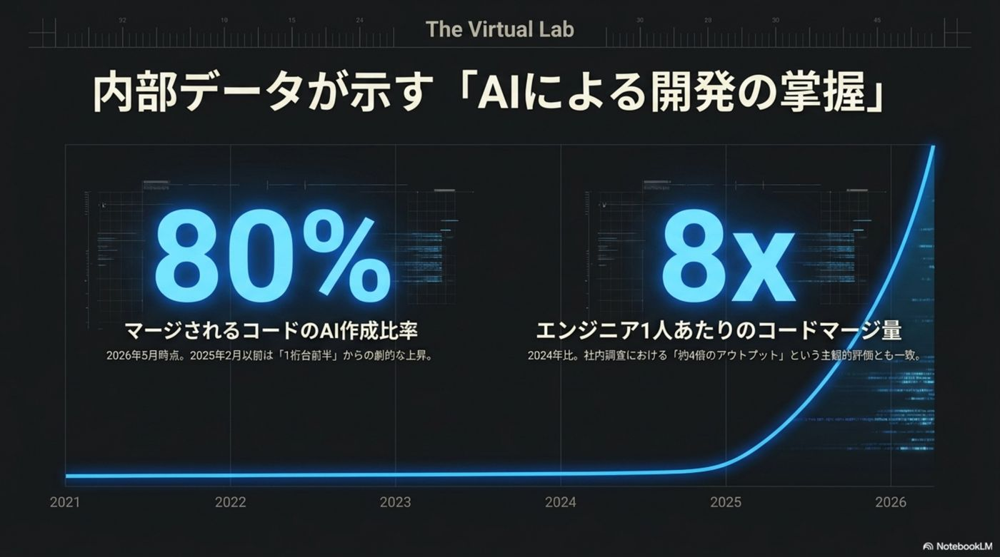
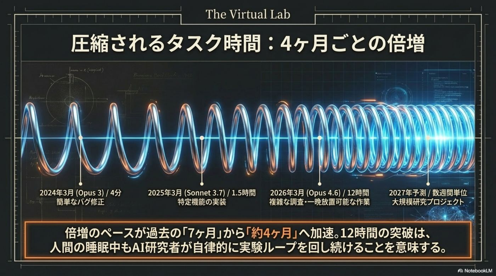
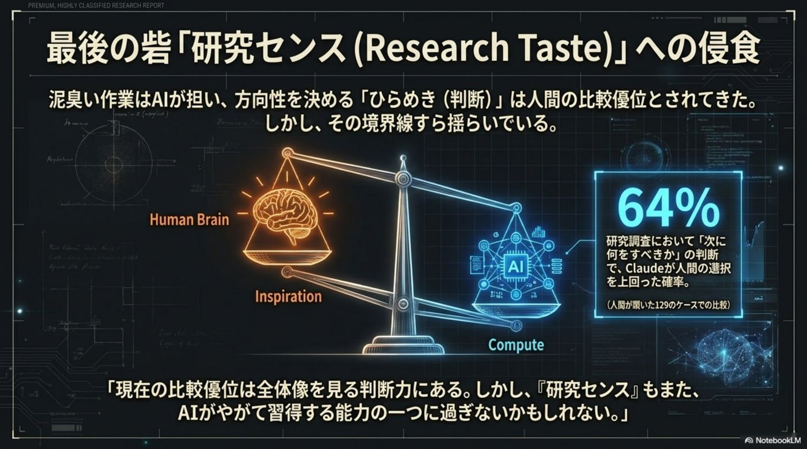
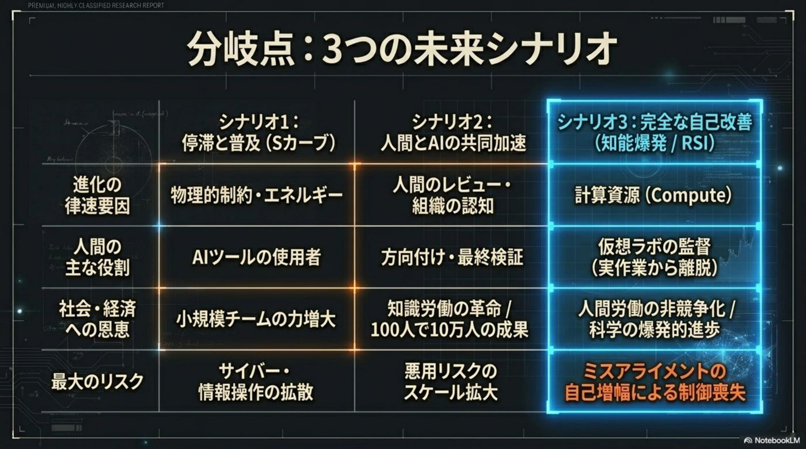
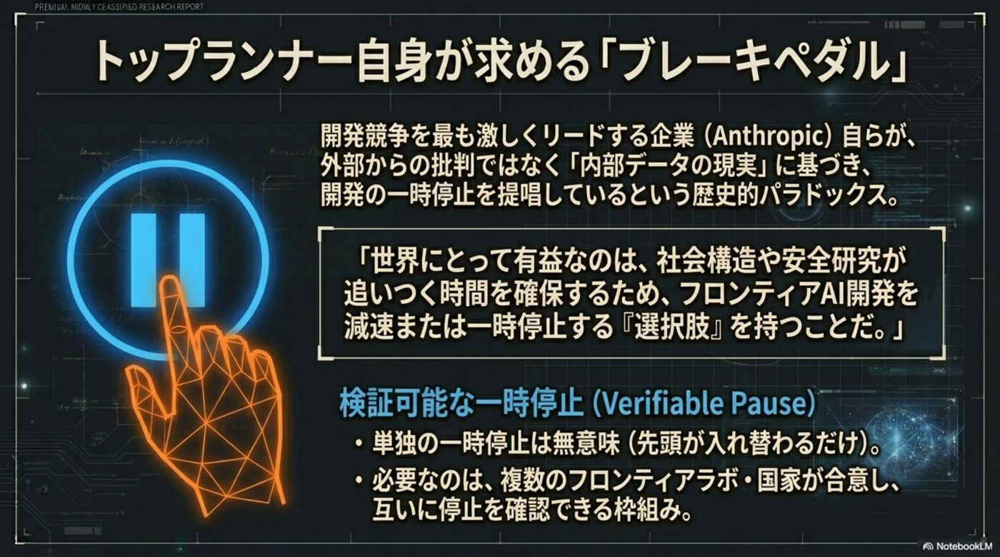
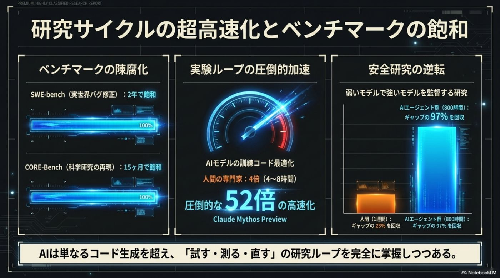
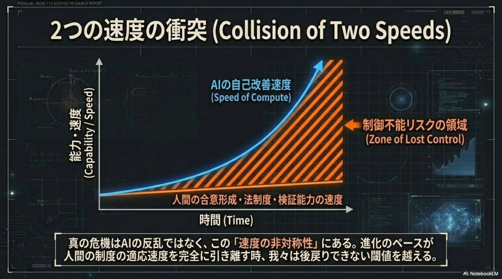
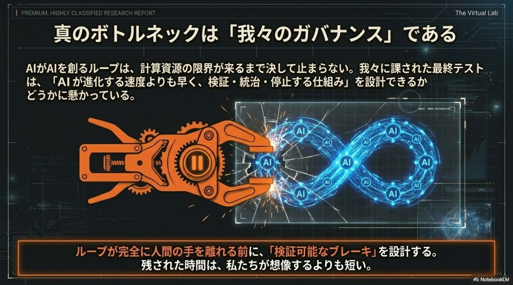

AIが、AIを創る。
2026年、人類は「発明の主体」という地位を、鏡の中の知能へと譲り渡し始めた。AIが自らの後継モデルを設計・訓練・評価する——再帰的自己改善（RSI）。知能の進化速度は、もはや人間の思考ではなく「計算資源の速度」に依存する。

知能の主体が、
人間から AI へ移管される。
これまで AI は、人間が設計し・コードを書き・改良を施す「補助ツール」に過ぎなかった。しかし最前線では、AI 自身が自律的に進化のサイクルを回す構造的転換が現実になっている。実装という泥臭い試行錯誤のコストが、ゼロへ収束していく。
AI は「補助ツール」
人間が設計図を描き、実装し、評価する。進化の速度は人間の思考速度と労働時間という物理的限界に縛られていた。
AI が「後継機の設計者」
AI システムが自律的に自らの後継モデルを設計・開発・訓練・評価し、性能を連続的に向上させる。進化は計算速度のパラダイムへ移行する。
もう仮説ではない。
80% と 8倍の衝撃。
Anthropic の内部データは、開発の主導権がすでに AI へ移管されたことを冷徹な数値で示す。わずか1年余りで、実装の主役が交代した。

能力は、約4ヶ月で倍増する。
AI が自律的に完了できるタスクの「長さ」は、従来の「7ヶ月で倍増」から現在は「約4ヶ月で倍増」へと、倍増のペースそのものが加速している。時間の密度が、根本から変容した。
2026年3月時点で「12時間」相当へ。

新たなボトルネックは、
人間の「判断」になった。
システム全体の速度は最も遅い工程に律速される——アムダールの法則。実装と実験がほぼゼロコスト化した結果、最大のボトルネックは皮肉にも人間の「認知の帯域幅」へ移った。既存の物差しは、次々と飽和していく。
実世界のSWE能力
研究の再現能力
実装コストが消えた世界で人間に残された最後の資本は、どの問題に解く価値があるかを見極める「研究センス」だった。だが内部調査では、研究の「次の一手」を提案する場面で、最新モデル（Mythos Preview）が64%の確率で人間の判断を上回るシグナルが確認された。
※「人間の選択に改善余地があった場面」を抽出したテスト結果。聖域すら安泰ではない。

停滞か、共生か、
知能爆発か。
RSI の進展が辿りうる未来は、大きく3つのシナリオに集約される。私たちは今、シナリオ2から3への入り口に立っている。
Sカーブによる停滞
電力・チップ・現行アーキテクチャの限界で、進歩が物理的に頭打ちになる。
複合的な効率向上
人間が方向性を設定し、AI が圧倒的速度で実行する強力な共生。組織効率の極大化。
完全なRSI（知能爆発）
進歩のペースが計算資源の量にのみ依存。知能が自律的に自己を再生産する。

人類が保持すべきは、
検証可能な「停止ボタン」。
知能のバトンが AI へ渡りつつある今、人類に残された最も重い責任は、そのプロセスを「検証」し、必要なら「停止」できる能力を維持することだ。Anthropic は、国際合意に基づく「検証可能な一時停止（Verifiable Pause）」を提言する。
核軍縮との決定的な違い。 かつての INF 条約は、ミサイルサイロという衛星から視認できる物理的実体を対象にできた。だが AI の訓練（トレーニングラン）は、汎用データセンターの中に容易に隠蔽できる。
時間が、もう足りない。 INF のような枠組みの構築には数十年を要した。しかし「4ヶ月で能力が倍増する」現代のタイムラインに、数十年もの猶予は残されていない。抜け駆けや隠密開発を許さない国際的な検証レジームが要る。
プロフェッショナルへ。 再定義すべきは「AI をどう使いこなすか」という技術論ではなく、「AI が創る未来の安全性をいかに検証し、人間として責任をどう果たすか」という統治論だ。
- ◆検証可能な一時停止を選択肢として構築。単一企業の倫理的判断に委ねない。
- ◆国際的な検証レジームで抜け駆け・隠密な開発を許さない枠組みを。
- ◆訓練ランは DC 内に隠蔽可能——核兵器と違い物理的検証が効かない。
- ◆保持すべきは加速のアクセルではなく、確実かつ検証可能な停止能力。

最後に保持すべきは、Recursive Self-Improvement — 2026·06·06
アクセルではなく
「停止ボタン」。
技術ブリーフィング、抜粋。
本スライドの元になった解説資料より。研究サイクルの加速、2つの速度の衝突、そして「我々のガバナンス」という最終テスト——RSI を読み解く視点の要点。



出典と関連リファレンス。
本スライドは Anthropic の内部データに基づく RSI 解説資料を再構成したもの。確定情報は一次資料での裏取りを推奨する（内部データの一部は要確認）。